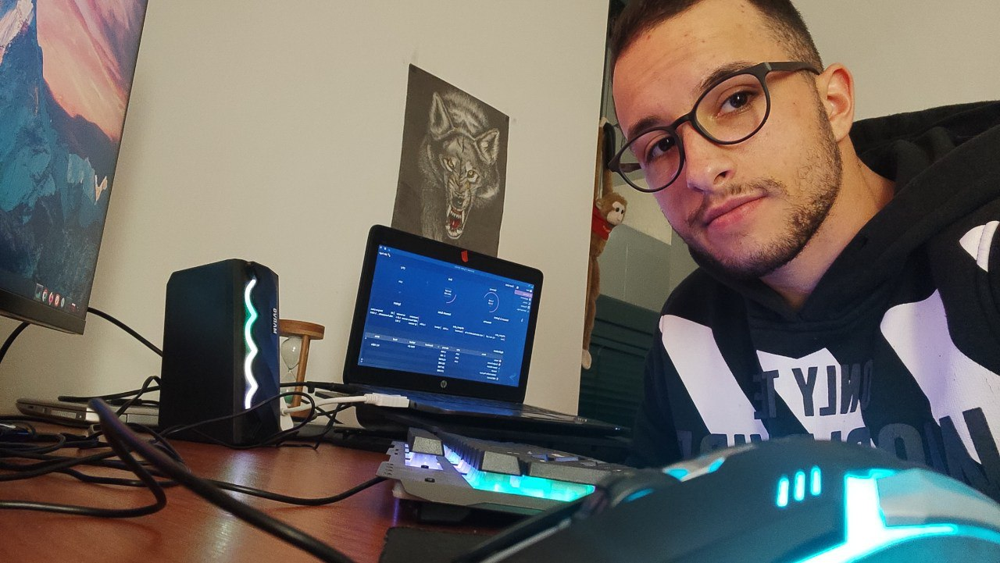

Intro

- Age: ~22
- City and Citizenship: Podgorica, Montenegrin
- Email: dante.o01@proton.me
- Education: Gymnasium "Stojan Cerovic", Niksic (2015-2019)
- Driver licenses: A1, B
- Languages:
- English C2
- Russian
- Learning bits of Spanish and German daily on Duolingo
Experience
Bicycle Courier
2022 - 2023 - 2024
Glovo MNE
- After 10000km+ and 5000+ orders delivered, I remain an undisputed champion of surviving the streets of Podgorica
- My wheels have seen it all, and my statistics are not just numbers—they're a testament to my dedication, patience and determination.
Bartender
2019 - 2023
Kokotov rep (Cocktail bar) (2020-2022), CKZ Ribnica (2023)
- As a bartender, I have honed valuable skills that translate seamlessly into the tech industry.
- Mastering multitasking, customer service, and effective communication, I thrived in a fast-paced, high-pressure environment.
- My problem-solving abilities, adaptability to change, and meticulous attention to detail were further sharpened. Time management, teamwork, and organization became second nature.
- My bartending experience has equipped me with a unique set of soft skills that complement my technical abilities and make me a valuable asset for any tech team.
Office Assistant
2019 - 2020
NGO Association Spectra
- My role as an office assistant in the NGO involved providing essential support to the director and project coordinators. I managed office inventory, handled calls, messages, and office visitors, and was responsible for scheduling meetings and sending invitations. Additionally, I undertook website maintenance tasks and oversaw the procurement of necessary materials. .
- I am still occasionally involved, most recently as a faciliator of the cybersecurity workshop on 11th October.
Education
In Progress:

Outro
Thank you for taking the time to get to know me a bit!